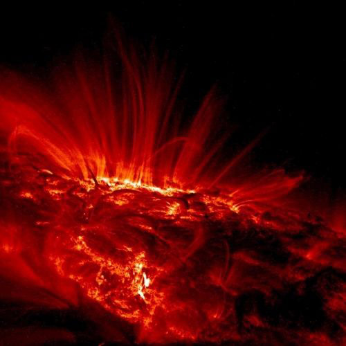
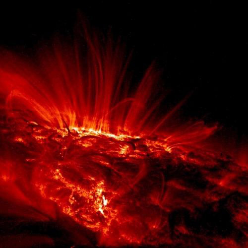

Знайомство із Сонячною системою
Сонце

Сонце

Меркурій

Венера

Земля

Місяць

Марс

Юпітер

Сатурн

Уран

Нептун

Плутон

Центральне тіло нашої планетної системи – Сонце. Утіленням Сонця в грецькій міфології був бог Апполон.
У надрах Сонця за температури в десятки мільонів градусів Цельсія та величезного тиску відбуваються так звані термоядерні реакції. Вони супроводжуються виділенням великої кількості енергії. Щосекунди Сонце випромінює таку кількість тепла, якого б вистачило розтопити шар льоду заввишки тисячу кілометрів.
Термоядерні реакції продовжуватимуться,
 поки в ядрі
Сонця не вичерпаються запаси Гідрогену.
Нині вони складають близько 60 % маси Сонця.
Такої кількості вистачить щонайменше на кілька десятків мільярдів років.
Наше Сонце – джерело не тільки тепла та світла.
Його зовнішні зони – фотосфера, хромосфера та корона
 –
випромінюють потоки невидимих ультрафіолетових і рентгенівських променів,
які впливають на характер процесів у земній атмосфері.
Ще багато років тому вчені помітили, що активність Сонця підпорядковується своєрідним циклам,
протягом яких вона досягає максимального значення, а потім знову спадає.
Це відбувається приблизно кожні 11 років.
У роки максимальної сонячної активності збільшується кількість плям та спалахів на поверхні світила,
невидиме випромінювання досягає найбільшої інтенсивності. У цей час на Землі виникають магнітні бурі,
відбуваються порушення радіозв’язку.
поки в ядрі
Сонця не вичерпаються запаси Гідрогену.
Нині вони складають близько 60 % маси Сонця.
Такої кількості вистачить щонайменше на кілька десятків мільярдів років.
Наше Сонце – джерело не тільки тепла та світла.
Його зовнішні зони – фотосфера, хромосфера та корона
 –
випромінюють потоки невидимих ультрафіолетових і рентгенівських променів,
які впливають на характер процесів у земній атмосфері.
Ще багато років тому вчені помітили, що активність Сонця підпорядковується своєрідним циклам,
протягом яких вона досягає максимального значення, а потім знову спадає.
Це відбувається приблизно кожні 11 років.
У роки максимальної сонячної активності збільшується кількість плям та спалахів на поверхні світила,
невидиме випромінювання досягає найбільшої інтенсивності. У цей час на Землі виникають магнітні бурі,
відбуваються порушення радіозв’язку.